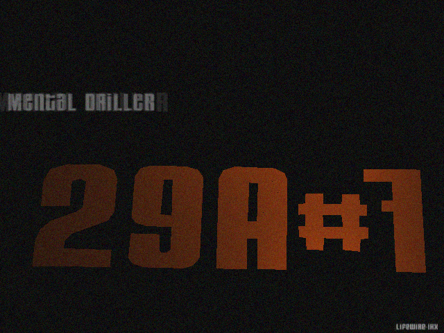
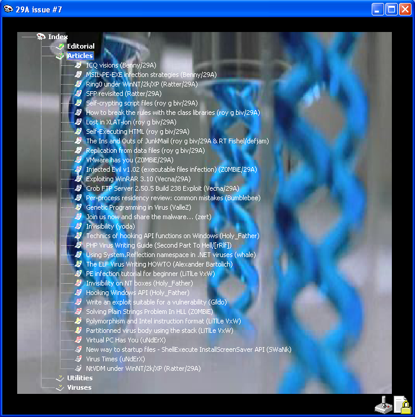

_________29A Issue # 7
Editorial______
Introduction
VirusBuster/29A
News
VirusBuster/29A
Contributors
VirusBuster/29A
Membership
VirusBuster/29A
Distribution
VirusBuster/29A
Our greetings
29A staff
Policies and goals
29A staff
Secret area
VirusBuster/29A
About the viewer
VirusBuster/29A
The media as an agent: Selling anti-virus software
Morphine
Anti-Virus Companies: Tenacious Spammers
Brian Martin & Fridrik Skulason
The Virus Meeting mini-magazine
Several staff
Last words from Benny
Benny/29A
Articles______
ICQ visions
Benny/29A
MSIL-PE-EXE infection strategies
Benny/29A
Ring0 under WinNT/2k/XP
Ratter/29A
SFP revisited
Ratter/29A
Self-crypting script files
roy g biv/29A
How to break the rules with the class libraries
roy g biv/29A
Lost in XLAT-ion
roy g biv/29A
Self-Executing HTML
roy g biv/29A
The Ins and Outs of JunkMail
roy g biv/29A & RT Fishel/defjam
Replication from data files
roy g biv/29A
VMware has you
Z0MBiE/29A
Injected Evil v1.02 (executable files infection)
Z0MBiE/29A
Exploiting WinRAR 3.10
Vecna/29A
Crob FTP Server 2.50.5 Build 238 Exploit
Vecna/29A
Per-process residency review: common mistakes
Bumblebee
Genetic Programming in Virus
ValleZ
Join us now and share the malware...
zert
Invisibility
yoda
Technics of hooking API functions on Windows
Holy_Father
PHP Virus Writing Guide
Second Part To Hell/[rRlf]
Using System.Reflection namespace in .NET viruses
whale
The ELF Virus Writing HOWTO
Alexander Bartolich
PE infection tutorial for beginner
LiTlLe VxW
Invisibility on NT boxes
Holy_Father
Write an exploit suitable for a vulnerability
Gildo
Solving Plain Strings Problem In HLL
Z0MBiE
Polymorphism and Intel instruction format
LiTlLe VxW
Partitionned virus body using the stack
LiTlLe VxW
Virtual PC Has You
uNdErX
New way to startup files - ShellExecute InstallScreenSaver API
SWaNk
Virus Times
uNdErX
NtVDM under WinNT/2k/XP
Ratter/29A
Utilities______
NT Ring0
roy g biv/29A
Stigma
GriYo/29A
Open Handle v1.0
Holy_Father
Gildo backdoor generator
Gildo
RGBLDE
roy g biv/29A
HaX0R'Z KiT v1.05
Z0MBiE/29A
HOOKLIB & SDE
Z0MBiE/29A
IRC Bot
Vecna/29A
CPU
Vecna/29A
ELF Linker for TASM\MASM
Vecna/29A
FTransf
Vecna/29A
Micro Length-Dissasembler Engine
uNdErX
InConEx - executing PE files in the own process memory context
yoda
LPE-DLX
yoda
Catchy32 v1.6
sars
Tiny NT Backdoor
Aphex
DoS IP Spoofing Library 1.0 for Winsock 2.0
Aphex
Calypzo V 0.2 - Message Signature Auditor
bcom
NT Password Creation
bcom
Backdoor GodzIILa 1.0
Sunnis
The Smallest TCP Port Redirector
Holy_Father
NT Rootkit
Holy_Father
IRC eXtender Pro 1.07 BETA
Z0MBiE
RSA Library
Z0MBiE
Examine the OLE 2.0 Structured Storage
Slash Wu
Process Hide v1.0
90210/HI-TECH
Common Language Runtime Portable Executable file format
Benny/29A
Windows NT / 2000 / XP______
WinNT.VDM
Ratter/29A
Win2k||XP.Che
Ratter/29A
Foroux.2K
Elkern
CannaByte
ValleZ
seven faces
lifewire/ikx
CannaByte v2
ValleZ & Super/29A
Win32 viruses______
Serotonin
Benny/29A
EfishNC.B
roy g biv/29A
EfishNC.C
roy g biv/29A
JunkHTMaiL
roy g biv/29A
JunkMail
roy g biv/29A & RT Fishel/defjam
freebird
Bumblebee
Foroux.A
Elkern
Tirthas
Kenerman
LadyMarian.2
ValleZ
Urk0
ValleZ
Forced Cavity Infector v0
sheroc
FLY
yoda
Seraph
Vorgon/iKX
Georgina
KiNETiK
RIVANON virus version 3.9
Doxtor L. [TKT]
CodeHopper.Queen.B
CodeMaster/Codex Vx Group
nastena
whale
Alicia
Necronomikon/ZeroGravity
HempHoper
Necronomikon/ZeroGravity
delikon
delikon
Gaybar
MrDinam0
Misc viruses and worms______
VBS.Conscrypt / JS.Conscrypt
roy g biv/29A
MSIL.Croissant
roy g biv/29A
VBS.Pretext / JS.Pretext
roy g biv/29A
HELKERN worm compileable disassembly
Z0MBiE/29A
Elf Virus
Vecna/29A
Hybris
Vecna/29A
I-Worm Rins
Anthony
i-worm.manyx
Bumblebee
Flying V
Anonymous
Balrog
PienSteVo
Siamexe
PienSteVo
AMON
emp & rikenar
Elf Infector
Rikenar
I-Worm/PieceByPiece
MI_pirat
.NET.SnaIL RC2
whale
Zaika
whale
4096
badCRC
Gildo
Gildo
4 .NET viruses (Flatei, Syra, Syra.b, Syra.c)
Alcopaul
mydoom
Anonymous

